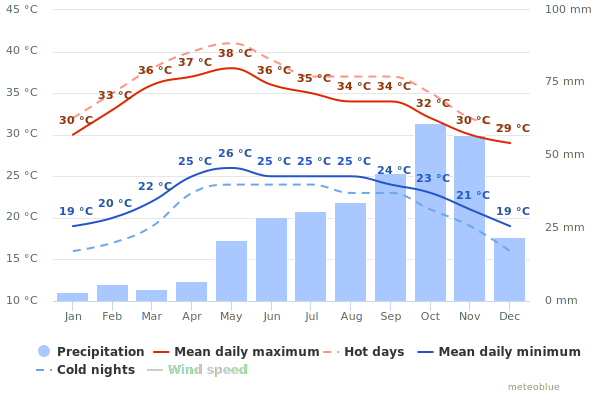

Utopia @ NITT
Background
The National Institute of Technology (formerly known as Regional Engineering College) Tiruchirappalli, situated in the heart of Tamil Nadu on the banks of river Cauvery, was started as a joint and co-operative venture of the Government of India and the Government of Tamil Nadu in 1964 with a view to catering to the needs of man-power in technology for the country. The college has been conferred with autonomy in financial and administrative matters to achieve rapid development. Because of this rich experience, this institution was granted Deemed University Status with the approval of the UGC/AICTE and Govt. of India in the year 2003 and renamed as National Institute of Technology. NIT-T was registered under Societies Registration Act XXVII of 1975. The progressive management of NITT recognizing the vital importance of energy as precious resource has been visibly active in implementing energy conservation measures. Our team prepared this website to accompany our report that encapsulates the field measurements, data collection, analysis, and energy conservation options for the field studies carried out during the period of March 2019.
Climate
NIT Tiruchirappalli experiences an overall very hot and dry climate throughout the year, making Solar Energy the most efficient source for viable renewable energy for the required demand. However an overall view of all factors such as temperature, clouds, precipitation, wind, etc. needs to be considered before jumping to such conclusion. • Average Max/Min temperature: 33.5°C/23.9°C • Annual Global Isolation: 1946 kWh/m2/year • Tilt Angle for Solar PV: 9° • Capacity Utilization Factor: 16.5%
(By ISRO 1990-2017)
-
Average Temperature and Precipitation:

The generalised plot (data from 1990-2018) provides with the overview on what sort of climate the region experiences. Temperature fluctuates but remains constantly above 30°C for the days and 20°C for nights. Precipitation is concentrated towards the end of the calendar year, especially October and November.
-
Precipitation:
.svg)
It is to be noted that October and November has similar number of dry days as to September and June, thereby concluding that the quantity of downpour is concentrated to a specific cluster of days.
-
Temperature:
.svg)
The overall temperature cluster remains similar to the Tamil Nadu region and does not bare any new conclusions.
-
Clouds:
.svg)
Clouds provide greatest challenge to establishments of solar farms and/or solar roofs. The region of NITT, though it provides higher temperatures, does possess a lot of partly-cloudy days, hampering the efficiency of solar panels.
-
Wind:
.svg)
Clearly NITT does not provide ideal situation for establishment of Wind Farms for generation of electricity.
-
Wind Rose Diagram:
.svg)
West-South-West provides the highest frequency for wind farm establishment, however as state earlier wind speeds would not yield profitable results.